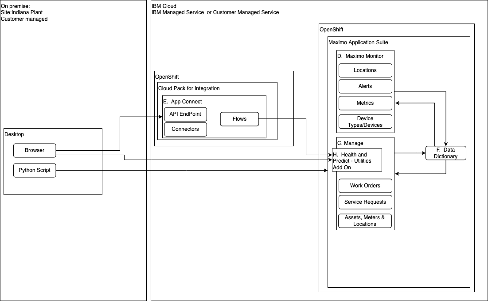

Get Started
In this Lab you wil learn how to use Maximo Health and Predict-Utilities capabilities to manage the reliability, condition and performance of your assets.
The version of Health and Predict - Utilities used in this Lab is for Maximo Application Suite v8.9.
Description
Maximo Manage includes the ability to manage assets. Reliability Engineers can use asset data stored in Manage and other data sources to better plan their asset maintenance and repairs to ensure asset reliability and reduce operational risks. By leveraging asset health scoring and AI algorithms to detect anomalies and predict asset failures, reliability enginers can action assets in time to mitigate or avoid their negative impacts.
Health and Predict - Utilities includes proven machine learning model templates to make predictions or classify asset condition using asset data. These lab exercises provide you the best practices and guided instructions for how to use Health and Predict - Utilities to set up and asses your asset condition scoring and using the Risk Matrix.
The intended audience for this lab are reliability engineers and data scientists who will set up the Maximo Environment and analyze their data to create custom scores to understand the condition of their assets. Reliability Engineers who need to plan to address assets with poor condition scores by adding them to an asset investment plan to repair or replace their assets.
Pre-requisites
For this exercise ensure you have access to :
- MAS v8.9 Health and Predict - Utilities
- Cloud Pak for Data Watson Studio compatible with MAS v8.9
- Maximo Schedule Optimization is enabled so that you can use Asset Investment Optimization included with Health Predict and Utilities.
Exercises
These are the exercises available in this lab.
- Build a Demonstration of Maximo Health and Predict
- Demonstration of Maximo Health and Predict
- Setup Watson Studio for Predict
- Create Custom Scores using Web UIin Health and Predict - Utilities.
- Create Custom Score using a notebook to create Custom Scores in Health to calculate a Pump's hydraulic efficiency.
- Forecast Custom Scores using a Notebook using a notebook to load Health Scores and Future Scores.
- Forecast Custom Scores using a Machine Learning Model by training the model using historical data.
Architecture
Here is the architectural deployment pattern these labs are targeted for:
Maximo v7.6.1 deployment with Maximo Application Suite Health Predict and Utilities

Maximo Application Suite Health Predict and Utilities deployed as an Add On to Manage 